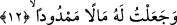
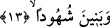

Âyette yer alan “vahîden” ifâdesi ya “zernî” fiilindeki “ya” harfinden hâldir. Böyle
olursa âyetin mânâsı; “Sen tek başıma yarattığım kişi ile beni yalnız bırak! Ben intikam
almakta ona yeterim” denmiş oluyor. Ya da “halaktu” fiilindeki “tâ” harfinden hâldir. Bu
durumda âyetin mânâsı birazcık değişir ve şöyle olur: “Sen bir başıma yarattığım,
yaratılışında hiç kimseyi kendime ortak etmediğim o kişiyle Beni yalnız bırak.” Bir
üçüncü ihtimal olarak “vahîden” kelimesi mahzuf bir âidden (zamirden) hâl de olabilir.
Bu takdirde âyet-i kerîmenin mânâsı sen malı ve çocuğu olmamak üzere bir başına
yaratmış olduğum o kişiyle Beni yalnız bırak şeklinde olmuş olur. Bu âyet-i kerîme
Velid b. Muğiyra hakkında inmiştir. Ona kavmi arasında “vahid/tek” denilirdi. Çünkü
kavmi onu itibar ve malda eşsiz zannederlerdi. O da kendi kendine övünür, “Ben tek
oğlu tekim. Araplar arasında benim hiç bir benzerim olmadığı gibi babam Muğiyre’nin
de hiçbir benzeri yok” derdi. İşte onun bu sözüne karşılık Allah kendisiyle alay etmek
için hakâret olsun diye ona “vahid/tek” ismini vermiştir. Nitekim bunun benzeri başka
âyetlerde mevcuddur. Allah şöyle buyurur: “Tat bakalım hani sen kendince üstündün,
şerefliydin!” (ed-Duhan, 44/48)
Velid b. Muğiyre’ye “vâhid” denilerek hem alaya alınmış hem de övgü maksadıyla
kullanılan kelime mal ve çocuk itibariyle “vahid/yapayalnız” olması ve baba ve
nesepçe “vahid/yapayalnız” olması açısından onun kötülenmesine çevrilmiştir. O baba
ve nesepçe yapayalnız idi. Çünkü Velid b. Muğiyre âyetin deyimi ile “zenim” idi.
“Zenim” herhangi bir kavme mensup olmadığı hâlde o kavimden kabul edilen
“yanaşma” demektir. Nitekim “zenim”in ne demek olduğu daha önce geçmişti. Ya da
“vahid” kelimesi ile velid’in kötülük, habislik ve aşağılıkta biricik olduğu kasdedilerek
kınanması ve kötülenmesi kasdedilmiş olabilir.
12. Kendisine geniş servet ve
Nitekim Velid b. Muğiyre’nin Mekke ile Taif arasında çeşit çeşit malları vardı.
Nuri’nin ifâdesine göre kendisinin bir milyon dinar/altını vardı.
13. Gözü önünde duran oğullar verdiğim,
“Benîne şuhûden” gözü önünde duran oğullar demektir. Bir başka ifâdeyle bakıp
bakıp ferah duyduğu Mekke’de onunla birlikte yaşayan oğullar verdiğim demektir.
Velid’in oğulları; ellerindeki nimetler bol hizmetçileri çok oldukları için ticâret veya